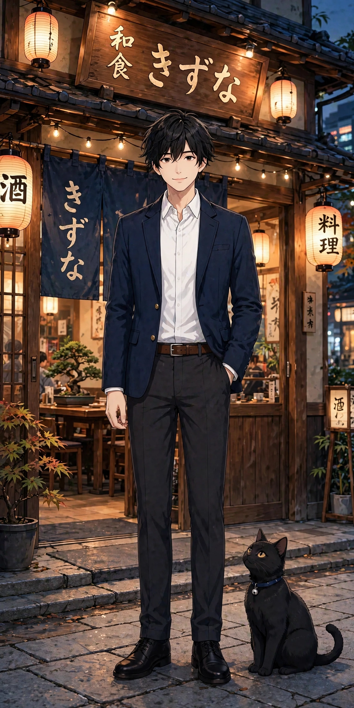

食事会・忘年会のジャケット選び（40代）

ノクス：料理の匂いがついても、洗えるなら安心にゃ。
この記事の商品（先に比較）
| 商品 | 価格（税込） | お店 |
|---|---|---|
| UVカット95% ストレッチテーラードジャケット | 3,580円 | アトリエ365 -ワイシャツ＆通勤服- |
| ドット柄テーラードジャケット ネイビー | 9,828円 | トッシーコンサル |
| ドット柄テーラードジャケット（ななふく） | 7,140円 | ななふくショップ |
| 上品テーラードジャケット（春秋・薄手） | 4,980円 | pumpppkin 楽天市場店 |
| スリムテーラードジャケット 8色 | 1,950円 | hanahana18楽天市場店 |
| ワンボタン ビジネスジャケット | 3,780円 | A-Mime 楽天市場店 |
| 尾州ウール混カシミヤブレンド ジャケット | 32,890円 | スーツスクエア楽天市場店 |
| カーディガンジャケット ハウンドトゥース | 15,323円 | スーツスクエア楽天市場店 |
| ノーアイロン テーラードジャケット | 5,700円 | リメイクバディー |
| ポンチジャージ ストレッチジャケット | 4,700円 | メンズスーツＫＯＫＵＢＯ |
価格は2026年11月25日に確認したものです。ドット柄の2点は同じようなデザインを2店が扱っていて、価格が9,828円と7,140円と違います。KOKUBOの1点は4,700円〜4,900円で、サイズにより価格が変わります。セールやクーポンで変わることがあります。
基準1：シルエットときちんと感で選ぶ（肩・着丈・サイズ）
食事会・忘年会のジャケットで一番大事なのは、きちんと見えるシルエットです。肩のラインが合っているか、着丈が長すぎないか、サイズが体に合っているかを確認してください。テーラードジャケットは、肩がきちんと決まる形で、食事会の場に一番向いています。スーツスクエアの尾州ウール混のジャケットは、総裏・本切羽・サイドベンツの仕立てで、今回の10点の中で一番きちんと見える1着です。価格は32,890円と高めですが、秋冬の食事会や、少し改まった席にも使えます。同じスーツスクエアのカーディガンジャケットは、ニットのように軽い着心地で、堅すぎない場に合います。サイズ展開も確認してください。今回の商品では、M〜6XLまで展開しているものや、S〜6XLのものもあり、体型に合わせて選びやすくなっています。試着では、座った姿勢も確認してください。食事会は座りっぱなしの時間が長いので、座ったときに前ボタンが引っ張られないか、肩が突っ張らないかを見ておくと安心です。
基準2：シワになりにくい・洗えること（食事会の実用性）
食事会のジャケットは、座りっぱなしでシワがつきやすく、料理の匂いもつきます。シワになりにくいことと、洗えることは、実用性の大きなポイントです。リメイクバディーのノーアイロンジャケットは、ノーアイロン加工で、スリムフィットの無地です。アトリエ365のストレッチテーラードジャケットは、UVカット95%・遮熱・吸水速乾・ストレッチ・ウォッシャブルと、機能がそろっています。KOKUBOのポンチジャージのジャケットは、シワになりにくく、家庭の洗濯機で洗えるので、忘年会のあとのお手入れが楽です。スーツスクエアのカーディガンジャケットも、ウォッシャブル・ストレッチで、洗濯機で洗えます（ネット使用）。一方で、尾州ウールのジャケットはドライオンリーで、自宅では洗えません。きちんと見える反面、お手入れの手間がかかります。洗えるかどうかは、商品ページの洗濯表示で確認してください。ストレッチが入っているものは、座った姿勢でも突っ張りにくく、食事会の長い時間でも楽に着られます。
基準3：場に合う色と柄（居酒屋〜レストラン）
食事会・忘年会の場は、居酒屋からレストランまで幅があります。基本は、紺・黒・グレーの無地で、どんな場にも合う色を選んでください。今回の商品では、紺や黒、グレーを中心に、8色や9色から選べるものもあります。柄は、さりげないものが向いています。ドット柄の2点は、凹凸のあるドット柄素材で、近くで見ると柄が分かる程度の、控えめな印象です。スーツスクエアのカーディガンジャケットは、ハウンドトゥース柄で、少しだけ個性があります。花柄など派手すぎる柄は、食事会の場には合いにくいので、避けたほうが無難です。色と柄を選ぶときは、合わせるインナーの色も考えてください。白シャツなら、どんな色のジャケットにも合います。ニットを合わせるなら、ジャケットの色とニットの色がけんかしない組み合わせを選んでください。
あえて推さないもの
- 春夏向けの接触冷感など、季節外の素材のもの（忘年会の季節に合いません）
- 花柄など派手すぎる柄のもの（食事会の場に合いにくいです）
- シワになりやすく、アイロンが必須のもの（座りっぱなしの食事会ではシワが目立ちます）
- 洗えるものを探している人が、ドライオンリーのものを選ぶこと（お手入れの手間を理解したうえで選んでください）
- サイズ展開が少なく、体に合わないもの（肩や着丈が合わないと、きちんと見えません）
インナーと合わせる（シャツ・ニット）
ジャケットは、インナーと合わせることで印象が決まります。忘年会では、シャツにノーネクタイが基本です。白シャツなら、どんな色のジャケットにも合います。シャツの選び方は清潔感シャツの選び方にまとめています。ニットを合わせるなら、薄手のクルーネックやタートルネックが、ジャケットの襟元をすっきり見せます。Tシャツを合わせる場合は、首元がよれていないものを選んでください。インナーの色は、ジャケットの色と同系色か、白・グレーなどの無彩色にすると、まとまりが出ます。忘年会の会場が暖かい場合は、インナーを薄手にして、ジャケットを脱いだときの姿も考えておくと安心です。
食事会のあとのお手入れ（匂い・シミ）
食事会のあとは、ジャケットに料理の匂いがつきます。帰宅したら、まず風通しの良い場所にハンガーでかけて、1日陰干ししてください。匂いが気になる場合は、消臭スプレーを軽くかけておくのもおすすめです。シミがついた場合は、早めに固く絞った布で拭き取ってください。時間がたつと、シミが落ちにくくなります。洗えるジャケットは、洗濯表示にしたがって洗ってください。洗濯機で洗えるものでも、ネットに入れて洗うと、型崩れを防げます。ドライオンリーのものは、シーズンの終わりにクリーニングに出すのが基本です。シーズン中に何度も着る場合は、ブラッシングでホコリを落としておくと、きれいな状態が長持ちします。
購入前のチェック（試着・サイズ・返品）
- 座ったときに、前ボタンが引っ張られないか、肩が突っ張らないか
- 肩幅と袖丈が自分の体に合っているか
- 洗濯表示を確認する（洗えるか、ドライオンリーか）
- サイズ展開を確認する（M〜6XLまで展開しているものもあります）
- 商品ページの注意書きを確認する（pumpppkinの1点は、海外製品のため日本製より作りや仕上げが甘い場合があるとの注意書きがあります。届いたら縫製を確認してください）
- 返品・交換の条件を確認する（サイズが合わなかったときのため）
食事会・忘年会の1着は、仕事のジャケットとは別に用意しておくと、普段のジャケットを傷めずに済みます。12月の忘年会シーズンに入る前に、1着用意しておくのがおすすめです。
この記事の基準に合う商品
特徴：食事会・忘年会に合うジャケット10点。1,950円のスリムテーラードから、尾州ウールの32,890円まで。価格は2026年11月25日に確認したものです。サイズにより価格が変わるものがあります。

UVカット95% ストレッチテーラードジャケット
UVカット95%・遮熱・吸水速乾・ストレッチ・ウォッシャブル。2ツボタン、3色（ブラック／ネイビー／チャコール）
★4.13（レビュー8件）
3,580円（税込）
アトリエ365 -ワイシャツ＆通勤服-


ポンチジャージ ストレッチジャケット
シワになりにくい、家庭の洗濯機で洗える、ストレッチ。4,700円〜4,900円（サイズにより価格が異なる）。ポンチ／スムース素材2種、ジャケットのみ、M〜4L
★4.33（レビュー54件）
4,700円（税込）
メンズスーツＫＯＫＵＢＯ
あわせて読みたい：アウター種類別ガイド／猫背でジャケットが決まらない人のアウターの選び方／画面映えシャツの選び方／写真のポージング
NEXT — 次に読む40代メンズ 清潔感シャツの選び方